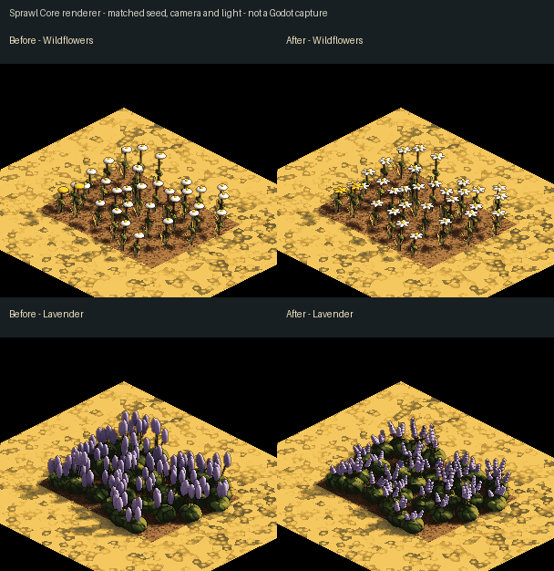
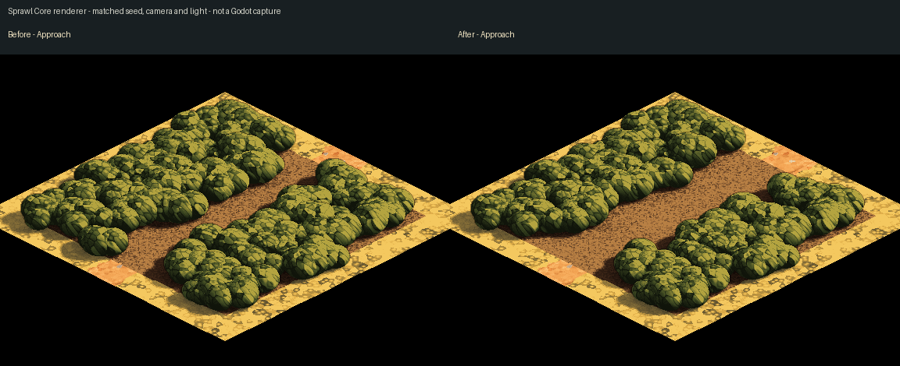
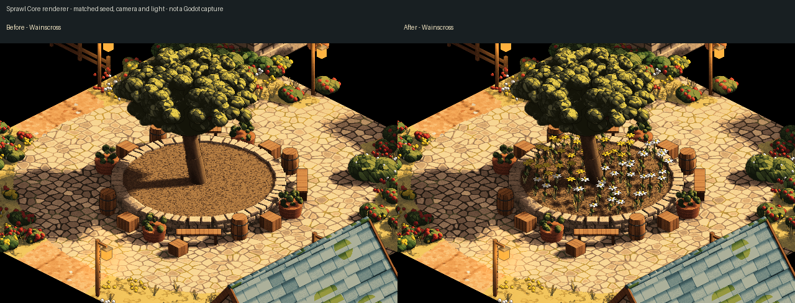

1 November 2026
Flowers and footsteps
The little things at the edge of a street do a surprising amount of work. A bed of daisies, a spray of lavender and a patch of kitchen herbs ought to tell different stories before you stop to inspect them. This pass gives the gardens in Sprawl's layered traced towns more recognisable shapes, and makes their planting leave room for the people passing by.

These are reproducible pictures from the game's Core renderer, rather than screenshots of a running Godot game. Each pair uses the same seed, camera and light. They show the geometry that the traced town renderer builds; a walk through the game remains a separate review.
A flower has a shape
The earlier daisies were little white discs on sticks. They now have separate petals around a warm centre. Lavender has branching stems, narrow leaves and small tiers of flowers, with gaps between them. Rosemary keeps its upright leafy form without borrowing lavender's purple flowers.
The extra detail is concentrated in deliberate garden beds. Broad meadow scatter keeps its simpler flower heads, so a small border does not set the cost of an entire field.
Room around the roots
A shrub can stand beside a path and still spread across it. Placement now allows for the whole plant: the offset lobes of a bush, its flowers, the fan of a herb spray and the lean of a grass tuft. Wider plants step back farther from lanes, doorways and stairs. Gateways also reserve an approach when there is no painted path to mark one.

This changes the scenery placed beside a route. It does not change the route itself or add new obstacles to walking.
Flowers inside the stone rim
The comparison in Wainscross exposed another small but visible fault. The paving of the square continued underneath the raised planter around its tree. The planting rules saw that paving and refused to grow flowers there, leaving an empty bed of soil.

A raised planter can now keep its flowers when their full spread fits inside its stone rim, even when a road is drawn beneath it in the town plan. The surrounding approaches remain protected. An ordinary bed at ground level still cannot grow over the square.
The next visual review is a walk through these gardens at the usual play zoom, checking the person against the flowers and the paths between them. Larger questions about woodland composition, orchard crowns and Oakwell's separate authored planting remain work for their own passes.